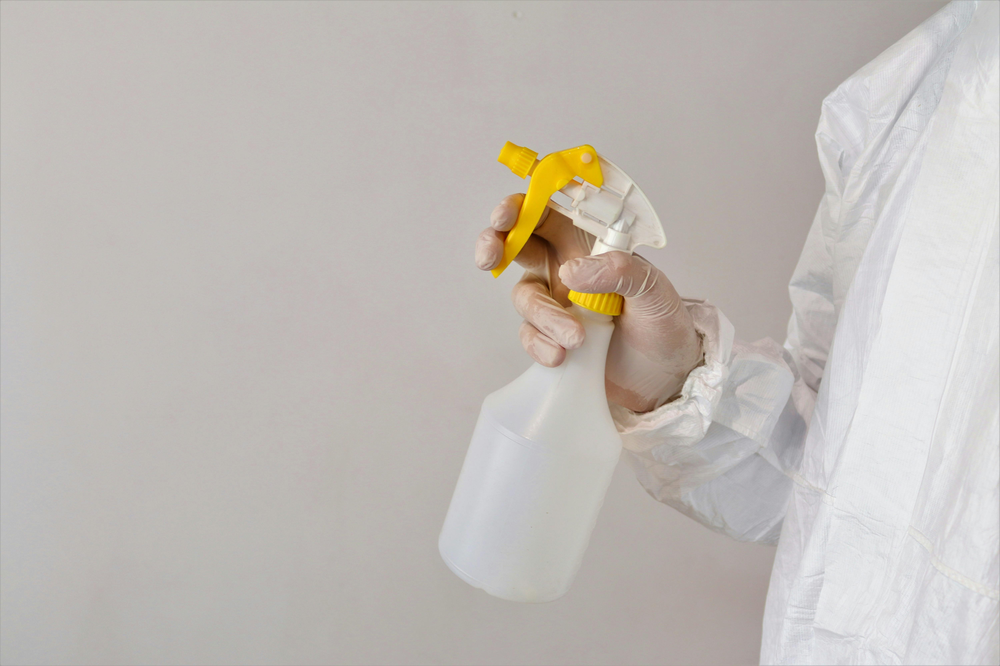

Ácido muriático en limpieza industrial: superficies compatibles, diluciones seguras y neutralización
El ácido muriático es uno de los productos de limpieza más potentes disponibles en el mercado, y también uno de los más mal usados. Su capacidad para disolver depósitos minerales, sarro, óxido y residuos calcáreos lo convierte en una herramienta indispensable en mantenimiento industrial, construcción y limpieza especializada.
Pero esa misma potencia lo hace peligroso cuando se aplica sin criterio: ataca superficies que no debería tocar, genera vapores corrosivos y puede causar quemaduras químicas graves en piel y vías respiratorias. Esta guía está dirigida a técnicos de mantenimiento, operarios de limpieza industrial y responsables de compras que necesitan entender exactamente qué hace este producto, dónde funciona, cómo prepararlo y qué hacer cuando algo sale mal.

Qué es el ácido muriático y por qué es tan reactivo
El ácido muriático es la denominación comercial del ácido clorhídrico (HCl) en solución acuosa, generalmente en concentraciones entre el 28 % y el 33 % para uso industrial. Es un ácido fuerte, lo que en términos químicos significa que se disocia completamente en agua liberando iones hidrógeno (H⁺) con alta capacidad de reacción.
Su mecanismo de acción sobre depósitos minerales es directo: los iones hidrógeno reaccionan con los carbonatos y óxidos metálicos que forman el sarro, la cal y el óxido, convirtiéndolos en sales solubles que pueden enjuagarse con agua. Esta reacción es rápida, visible y en muchos casos irreversible si se aplica sobre materiales incompatibles.
Superficies compatibles: dónde sí funciona
Concreto y mortero
Es la aplicación más extendida en construcción e industria. El ácido muriático disuelve la lechada de cemento sobrante, las eflorescencias (manchas blancas de sales minerales que afloran en paredes y pisos de concreto) y los residuos de mortero endurecido. Se usa rutinariamente para preparar superficies antes de aplicar recubrimientos, pinturas o selladores, ya que abre los poros del concreto y elimina la capa superficial que impediría la adherencia.
Cerámica y porcelanato no esmaltado
Efectivo para eliminar residuos de cemento cola, sarro y manchas de cal en pisos industriales de cerámica. En porcelanato esmaltado el riesgo es mayor porque el ácido puede atacar el esmalte con el tiempo o en concentraciones altas.
Acero inoxidable (con condiciones estrictas)
En industria alimentaria y farmacéutica se usa en concentraciones muy bajas para eliminar depósitos de sarro y películas minerales en equipos de acero inoxidable. Es un uso técnico que requiere control de concentración, tiempo de contacto y neutralización posterior.
Ladrillos y mampostería
Para limpieza de fachadas con eflorescencias, residuos de mortero o manchas de agua con alto contenido mineral. La porosidad del ladrillo requiere diluciones más conservadoras que el concreto para evitar penetración excesiva.
Piscinas
Para eliminar sarro y depósitos calcáreos en las paredes, bajar el pH del agua en situaciones de alcalinidad extrema y limpiar filtros con incrustaciones minerales. Es un uso válido pero que requiere conocimiento del volumen de agua y el estado químico del sistema antes de intervenir.
Superficies incompatibles: dónde nunca debe aplicarse
Este es el punto donde más errores costosos ocurren. El ácido muriático reacciona agresivamente con los siguientes materiales:
- Mármol, granito y piedra natural calcárea: la reacción con el carbonato de calcio es inmediata y destructiva. El ácido disuelve literalmente la superficie, dejando marcas opacas, rugosidades y daños irreversibles. Un error de segundos en mármol pulido puede arruinar un piso de alto valor sin posibilidad de reparación completa.
- Metales ferrosos sin protección (hierro, acero al carbono): corroe el metal de forma acelerada. Una aplicación no controlada puede comprometer estructuralmente una pieza metálica en minutos dependiendo de la concentración.
- Aluminio y zinc: reacción especialmente violenta. El ácido ataca estos metales con liberación de hidrógeno gaseoso, lo que además del daño al material genera riesgo de inflamabilidad en espacios cerrados.
- Superficies pintadas o con recubrimientos epóxicos: levanta la pintura, destruye los recubrimientos protectores y deja la superficie subyacente expuesta.
- Madera: la degrada, mancha y debilita las fibras. Sin excepción.
- Telas, cuero y materiales orgánicos: corrosión inmediata. Cualquier contacto accidental con ropa de trabajo debe tratarse como una emergencia.
Cómo preparar diluciones correctamente
| Aplicación | Dilución (ácido:agua) | Concentración aproximada |
|---|---|---|
| Limpieza suave de concreto | 1:20 | ~1.5 % |
| Limpieza general de concreto | 1:10 | ~3 % |
| Eliminación de eflorescencias | 1:5 | ~6 % |
| Limpieza de cerámica industrial | 1:15 | ~2 % |
| Tratamiento de piscinas | 1:30 o más | <1 % |
| Acero inoxidable (uso técnico) | 1:50 | <0.5 % |
Estas diluciones son referencias para ácido muriático comercial a concentración estándar de 30 a 33 %. Si el producto tiene una concentración diferente, los cálculos cambian. Verifica siempre la concentración del producto antes de preparar la dilución.
Equipamiento mínimo para preparar y aplicar
- Guantes de nitrilo grueso o neopreno (los guantes de látex domésticos no son suficientes)
- Gafas de seguridad con protección lateral, no solo lentes
- Mascarilla con filtro para vapores ácidos (FFP2 mínimo, idealmente con cartucho específico para vapores inorgánicos)
- Delantal o ropa de trabajo resistente a ácidos
- Recipiente de plástico (HDPE o PP) para preparar la dilución. Nunca recipientes metálicos ni de vidrio fino
- Agua abundante disponible para enjuague de emergencia
Procedimiento de aplicación
- Evaluación previa Confirma que la superficie es compatible. En caso de duda, prueba en un área pequeña y no visible antes de tratar la superficie completa.
- Ventilación En espacios cerrados o semicerrados, asegura circulación de aire activa antes de abrir el producto. En espacios confinados, ventilación forzada obligatoria.
- Protección personal completa Guantes, gafas y mascarilla puestos antes de manipular el producto, no durante.
- Humedece la superficie Aplicar agua sobre la superficie antes del ácido reduce la absorción inmediata y facilita el trabajo uniforme del producto.
- Aplica la dilución preparada Con brocha de plástico, esponja resistente a ácidos o aspersor de plástico según el área. Distribuye de forma uniforme. Evita acumulaciones en esquinas o grietas donde el tiempo de contacto se prolonga sin control.
- Controla el tiempo de contacto Para la mayoría de las aplicaciones, entre 2 y 10 minutos es suficiente. El burbujeo visible indica que la reacción está ocurriendo. Si el burbujeo es muy intenso, la dilución puede ser demasiado concentrada para esa superficie.
- Enjuague abundante Usa agua en cantidad suficiente para arrastrar todos los residuos ácidos. Un enjuague insuficiente deja ácido residual que continúa reaccionando después de que el operario se ha retirado.
- Neutralización Paso crítico detallado en la siguiente sección.
Neutralización: el paso que más se omite y más importa
Enjuagar con agua elimina la mayor parte del ácido, pero no garantiza que el pH de la superficie haya vuelto a un rango neutro. Los residuos ácidos que permanecen en poros y grietas continúan reaccionando con el material, aceleran la corrosión en metales cercanos y pueden interferir con recubrimientos o selladores aplicados posteriormente.
La neutralización consiste en aplicar una solución alcalina suave después del enjuague para llevar el pH de la superficie a un rango neutro (entre 6 y 8).
Bicarbonato de sodio en solución
La opción más práctica y segura para uso general. Disuelve 50 a 100 gramos de bicarbonato por litro de agua y aplica sobre la superficie enjuagada. El burbujeo visible confirma que aún hay residuos ácidos reaccionando. Cuando el burbujeo cesa, la neutralización está completa. Enjuaga nuevamente con agua limpia.
Carbonato de sodio (soda ash) en solución
Más alcalino que el bicarbonato, útil para neutralizar áreas con mayor residuo ácido. Misma lógica de aplicación: solución al 5–10 %, aplicar, observar reacción, enjuagar cuando cesa el burbujeo.
Cal hidratada en suspensión
Para neutralización de derrames grandes sobre superficies de concreto o suelos industriales. Esparce cal hidratada en polvo sobre el área afectada, deja actuar y recoge. Es el método más rápido para derrames de volumen.
Qué hacer ante un accidente
Contacto con piel
Retira la ropa contaminada inmediatamente. Lava la zona afectada con agua abundante durante mínimo 15 a 20 minutos. No apliques neutralizantes directamente sobre la piel: el agua es suficiente y más segura. Busca atención médica aunque la quemadura parezca leve; los daños de los ácidos fuertes pueden ser progresivos.
Contacto con ojos
Enjuague inmediato con agua limpia durante mínimo 20 minutos manteniendo el párpado abierto. Atención médica urgente sin excepción.
Inhalación de vapores
Retira a la persona al aire fresco de inmediato. Si hay dificultad para respirar, tos persistente o sensación de quemazón en garganta, atención médica urgente. No subestimes la inhalación: el daño en mucosas respiratorias puede no ser inmediatamente evidente.
Derrame sobre superficie incompatible
Neutraliza con bicarbonato o cal hidratada de inmediato para detener la reacción. Recoge el material neutralizado y dispón según normativa local de residuos químicos.
Almacenamiento y disposición
Almacenamiento
- Recipiente original bien cerrado, en lugar fresco, ventilado y alejado de luz solar directa
- Separado de productos alcalinos, oxidantes y materiales orgánicos inflamables
- Nunca en recipientes metálicos
- Señalización del área con pictogramas de producto corrosivo
- Fuera del alcance de personal no autorizado
Disposición de residuos
El ácido muriático diluido y neutralizado puede disponerse en sistemas de alcantarillado industrial cuando el pH está entre 6 y 9, según la normativa colombiana vigente para vertimientos. El ácido concentrado o en concentraciones medias no neutralizadas requiere gestión por empresa autorizada para residuos peligrosos. Nunca verter ácido sin neutralizar en desagües domésticos o suelos.
Conclusión: potencia con protocolo
El ácido muriático es insustituible para ciertos trabajos de limpieza y mantenimiento industrial. Ningún otro producto limpia eflorescencias de concreto, sarro mineral severo o residuos calcáreos con la misma velocidad y eficacia a un costo comparable. Pero esa potencia exige un protocolo claro: dilución correcta, superficie compatible verificada, protección personal completa, tiempo de contacto controlado y neutralización sistemática.
Los accidentes con este producto no ocurren por desconocimiento total sino por exceso de confianza: operarios experimentados que omiten los guantes una vez, diluciones preparadas de memoria sin verificar, neutralización saltada por prisa. El protocolo vale exactamente lo mismo la primera vez que la centésima.
Tres puntos para llevarse de este artículo:
- Verifica siempre la compatibilidad de la superficie antes de aplicar: el daño en mármol, aluminio o acero sin protección es irreversible en segundos
- La dilución correcta para cada aplicación no es opcional: más concentrado no significa más rápido, significa más riesgo de daño y menor control del resultado
- La neutralización con bicarbonato después del enjuague no es un paso extra, es parte del proceso. Sin ella el trabajo no está terminado